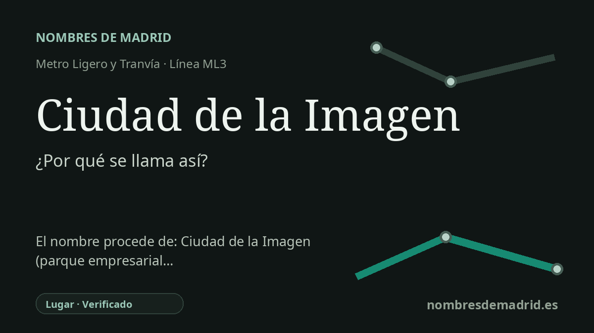

Publicado el · Investigación de Nombres de Madrid · Cómo verificamos cada origen · 8 fuentes consultadas
Respuesta rápida
Debe su nombre a la Ciudad de la Imagen, el parque empresarial audiovisual de Pozuelo de Alarcón junto a la estación. El topónimo refleja un proyecto de los años noventa para concentrar cine, televisión, formación y conservación fílmica cerca de Prado del Rey.
La historia del nombre
El nombre de la estación es directo y local: Ciudad de la Imagen es el parque empresarial audiovisual que ocupa esta zona de Pozuelo de Alarcón. Metro Ligero Oeste describe la parada de ML3 como una estación situada junto a la calle Juan de Orduña, cerca de la ECAM y del centro Carrefour Ciudad de la Imagen.
El topónimo significa literalmente 'Ciudad de la Imagen', pero aquí la 'imagen' no alude de forma poética al paisaje. Se refiere al cine, la televisión, la posproducción, la formación audiovisual y los archivos fílmicos. Las páginas municipales de Pozuelo describen la Ciudad de la Imagen como un complejo de oficinas y ocio de temática audiovisual, y la historia local señala la concentración allí de televisiones, productoras y formación audiovisual.
El proyecto ya aparece con claridad en la prensa de julio de 1990, cuando la Comunidad de Madrid, Caja de Madrid y el Instituto de Crédito Oficial constituyeron la sociedad encargada de promover y gestionar el denominado oficialmente Centro de Actividades Audiovisuales. La cobertura de la época lo presentó como una 'cinecittà' madrileña, proyectada sobre 859.000 metros cuadrados de suelo público en Pozuelo, cerca de Prado del Rey y la Casa de Campo, con espacios de producción, comercio y apoyo.
Esa identidad planificada se volvió especialmente visible en el callejero y en el corredor de transporte. En la zona hay calles y paradas con referencias cinematográficas, como Juan de Orduña, José Isbert y Ciudad del Cine. Por eso la estación no toma su nombre de un antiguo topónimo rural ni de una persona concreta, sino de un proyecto urbano e industrial de finales del siglo XX vinculado a la economía audiovisual madrileña.
La prueba del origen del nombre es sólida, aunque algunas síntesis públicas exageran un matiz. La Filmoteca Española como institución no está íntegramente 'en' la Ciudad de la Imagen; allí se encuentra su Centro de Conservación y Restauración de Fondos Fílmicos Carlos Saura, inaugurado en 2014 sobre parcelas cedidas en 1990. El nombre de la estación parece corresponder a la apertura de Metro Ligero Oeste el 27 de julio de 2007.